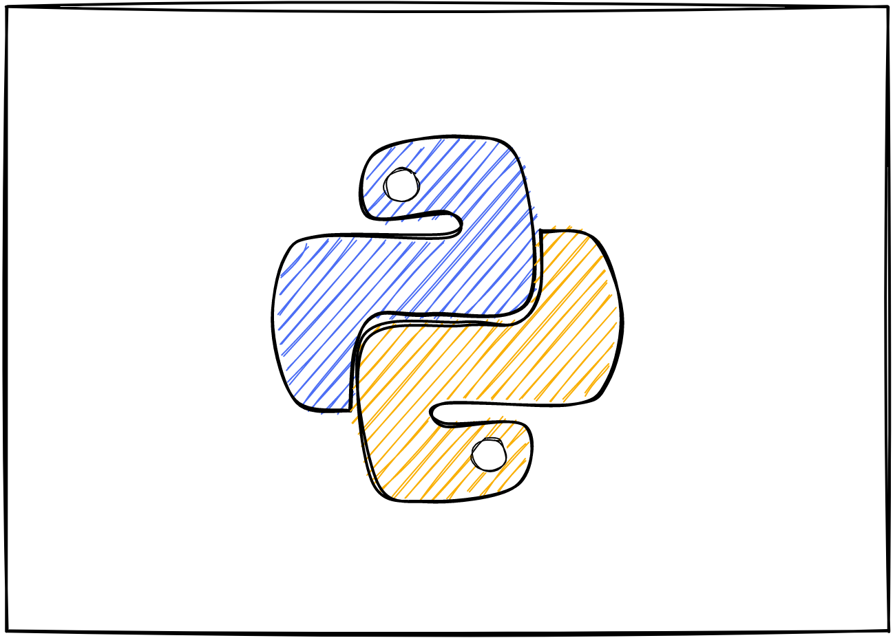

- Computer Basics
- Python Beginner

| About |
|
|---|---|
| ----Odia intro---- | Hello, I am Bikash, currently an engineering student at IIT,Madras. The purpose of this website is to help my fellow Odias gain computer literacy by providing the materials in the native language.By doing so I intend to help those who are interested in learning programming and other computer related stuff but are unable to do so due to language barrier.The tone of the tutorials will be informal and I intend to write as I speak without formalities. |
| ---Odia Content--- | The source code for this website is Open. This ensures that those who wish to contribute to the resources available on this website can do so conveniently. Contribution in any form is appreciated. If you are a python developer you can post your scripts, if you are a web developer you can enhance the functionality of the website, if you are good with Odia and English languages you can help in translating the content of website and many more.The best way to contribute will be through Github. Please refer to the following section for any doubts or feedback. |